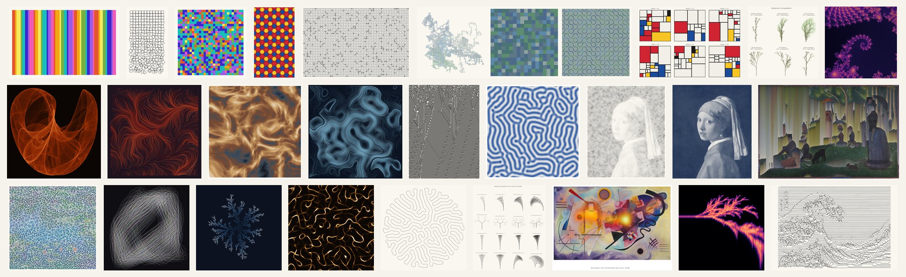
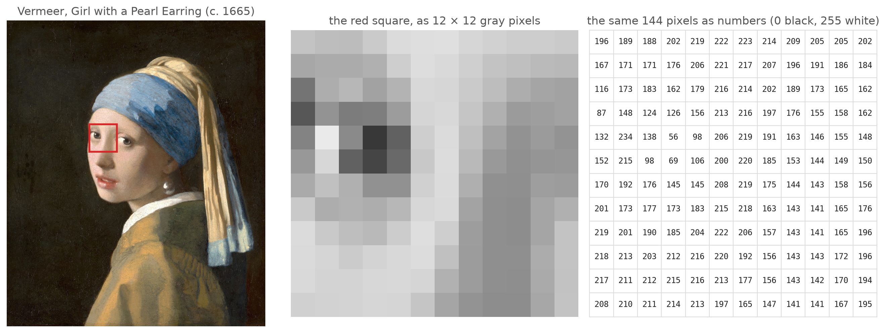
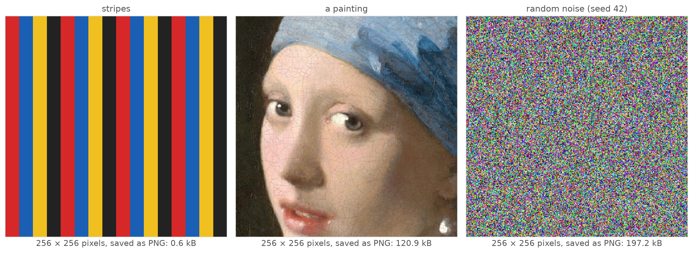
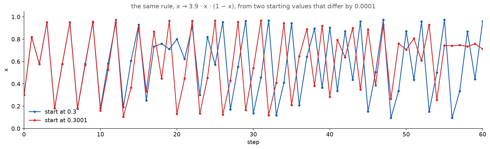
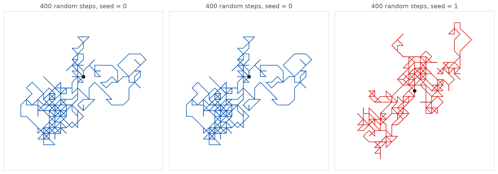

Algorithmic Generative Art with Python#
For art historians learning mathematics and coding by reimplementation.

Note
This is the course book for Algorithmic Generative Art with Python (course 080120) at the University of Vienna, taught in the winter semester 2026/27 in the Master’s programme in Art History. It is a work in progress and will keep changing as the course runs; corrections, suggestions, and feedback of any kind are warmly welcome at xingyu.long@univie.ac.at.
Why rebuild what already exists#
This text asks you to reimplement, from scratch, systems whose outputs already hang in museums. That is a method, not a detour. Archaeologists learned long ago that some knowledge only surfaces when you rebuild the thing: casting a bronze axe or raising a megalith exposes decisions, constraints, and skills that no amount of looking at the finished object can recover (Coles 1973), a practice of testing what we think we know about how things were made, known as experimental archaeology (Outram 2008). Making as a mode of inquiry has the same standing closer to home: building a working version of a concept is itself a way of thinking the concept through, what Ratto calls critical making (Ratto 2011). Media studies has a neighbouring approach under the name media archaeology: the media of the past are understood not from the standard histories alone, but by digging into the neglected machines, formats, and practices themselves (Huhtamo and Parikka 2011). Early computer art, drawn by plotters from code that often survives only in print, in fragments, or not at all, is exactly such a site.
Recoding Georg Nees’s Schotter or a Vera Molnár series works in much the same way. Every parameter your version needs before it runs (how much disorder, which stopping rule, what line weight) is a question the original artist once answered, and reimplementation turns you from a viewer of the answer into a witness of the decision. The images this text has you generate are side products in the best sense: what you are actually building is an understanding of the systems behind them, precise enough to run.
One clarification, since the word generative has come to mean something else. These notes do not use image models: no prompts, nothing downloaded that draws for you. Every image here is produced by code you can read in full, usually a few dozen lines, and that is the point. The objective is that you can read, write and understand the code and the mathematics behind generative images; the images are the working material. No prior programming or mathematics is assumed. Chapter 0 starts from zero.
What is an algorithm#
An algorithm is a recipe with no room for interpretation: a finite list of steps, each precise enough to be followed without understanding, that ends and gives an answer. The oldest one still in daily use is in Euclid’s Elements, Book VII, written around 300 BC. To find the largest number that divides both of two numbers, keep subtracting the smaller from the larger until the two are equal; what remains is the answer (Heath 1956). With 48 and 18 it goes 48, 18 → 30, 18 → 12, 18 → 12, 6 → 6, 6, and the answer is 6. No trial division, no insight needed at any step, and it works for any pair of numbers you will ever hand it. The word itself comes from the name of al-Khwārizmī, a Persian author of arithmetic textbooks around the year 825 (Knuth 1997).
A knitting pattern is an algorithm. A cooking recipe almost is: “season to taste” is the line a computer cannot execute, and finding such lines and replacing them with something a machine can follow is most of what programming consists of. The algorithm is the idea; a program is the idea written in a language a machine reads. In these notes that language is Python.
Computation is older than computers#
Until the middle of the twentieth century, computer was a job title. A computer was a person, very often a woman, who carried out a written procedure step by step: tables of logarithms, the positions of comets, the paths of shells, each entry produced by following instructions that somebody else had written, without needing to know why they worked (Grier 2005). When Alan Turing set out in 1936 to say precisely what it means to compute, he did not describe an electrical device. He described that person, reduced to essentials: a strip of paper, a pencil, and a short table of rules saying what to write and where to look next (Turing 1937). The machine does four things and nothing more: read the symbol under its head, write a symbol, move one cell to the left or right, change its state. The whole table of rules fits on an index card. Everything a laptop computes still fits inside that picture: faster, with a longer tape, but not different in kind, and every program in these notes could in principle be run by a patient person with a pencil. The same paper also proves that some questions no procedure can answer at all. The field began by finding out what cannot be computed.
That is the first beautiful thing about computation, and the one these notes keep returning to. A rule written precisely enough can be carried out by anyone, or anything, and gives the same result every time. The rule is portable; the person who wrote it no longer needs to be in the room. People noticed this long before there were machines to exploit it, and artists went on noticing it after there were. In 1704 the Carmelite friar and engineer Sébastien Truchet looked at a floor tile, one square split diagonally into two colours, and asked what repeated copies of it could make; his memoir is a catalogue of patterns built from a single tile turned four ways (Truchet 1704), and chapter 4 rebuilds it. In 1967 Sol LeWitt wrote that in conceptual art “the idea becomes a machine that makes the art” (LeWitt 1967). Artists read the sentence as a manifesto; to a programmer it is a plain description of a job: instructions written by one person, executed by others. Chapter 1 begins there.
A short timeline shows how late the machines arrive in this story, and how late the art.
When |
What |
|---|---|
c. 300 BC |
Euclid writes down an algorithm (Heath 1956) |
c. 825 |
al-Khwārizmī, whose name gives us the word (Knuth 1997) |
1703 |
Leibniz publishes arithmetic with only 0 and 1 (Leibniz 1703) |
1843 |
Ada Lovelace writes that Babbage’s unbuilt engine “might compose elaborate and scientific pieces of music of any degree of complexity or extent” (Lovelace 1843) |
1936 |
Turing defines computation with paper and pencil (Turing 1937) |
1945 |
ENIAC, the first general-purpose programmable electronic computer, is completed (Haigh, Priestley and Rope 2016) |
1948 |
Shannon measures information in bits (Shannon 1948) |
1951 |
von Neumann on computed randomness: “a state of sin” (von Neumann 1951) |
1965 |
the first exhibitions of computer art, in Stuttgart and New York (Nake 2009; Noll 1994) |
1991 |
Python’s first public release (van Rossum 2009) |
Most of the ideas these notes use are older than the machines that run them; the machines, and the art made with them, occupy the last few lines. Lovelace saw generative art in a machine that was never built, more than a century before anyone exhibited any.
Computer science is not about computers#
Take one addition and look at it on five levels. The idea: add three to the number. The
Python line: x = x + 3. The processor’s own instruction for the same thing: a few bytes
such as 48 83 C0 03. The circuit of transistors that carries it out. The physics of
electrons in silicon. Each level hides the one below it. You will live on the Python level
for the whole of these notes; the other four exist, and you never need to visit them.
“Computer science is no more about computers than astronomy is about telescopes.” The line is usually credited to Edsger Dijkstra, but it was first put in print by Michael Fellows and Ian Parberry (Fellows and Parberry 1993), and whoever says it is right. The field is about which problems have procedures at all, how to write the procedures so that people can read them, and how long they take to run. Hardware is where it happens, not what it is.
Which is why the choice of language matters less than beginners fear, and why these notes
use Python. It reads almost like the idea level: a loop says for, a decision says if,
and a line of it usually means what it looks like it means. It is free, it runs on every
operating system, and it is the language most scientists who write code write, with
libraries for numbers and images that the later chapters lean on. The art world has its
own languages for the same purpose, Processing and its browser cousin p5.js, and they are
a fine next step once you can read Python; Python is chosen here because it is the language
of data and science, where an art historian is most likely to meet code again.
Everything is numbers#

A gray pixel is one number from 0 (black) to 255 (white). A colour pixel is three, one each for red, green and blue. The reproduction of the Vermeer that chapter 5 works on is 1920 by 2274 pixels with three numbers each: about thirteen million numbers, and nothing else. Text is numbers (the letter A is 65), sound is numbers (44,100 of them per second on a CD). Whatever the computer handles, it handles as numbers, and that is why one machine can do everything.
A number, in turn, is bits: 65 is 01000001. Shannon fixed the bit as the unit of information in 1948 (Shannon 1948); eight bits make a byte with 256 possible values, which is why 255 is the brightest a pixel gets. That is the only place bits appear in these notes. Chapter 5 and everything after it works on exactly these grids of numbers.
How much information is in a picture?#

The three images are the same size, 65,536 pixels each, three numbers per pixel. Saved as PNG they take 0.6, 120.9 and 197.2 kilobytes. The file format finds repetition and shrinks it: the stripes are all repetition, the noise has none, and the painting lies in between.
There is a second way to measure the same thing: the length of the shortest program that draws the picture. For the stripes it is two lines. For the noise it is also two lines, plus the number 42, because the computer’s randomness was never random (the next section says why). For the painting nobody knows a short program. Order is cheap to describe, noise is cheap to make, and a painting is neither. These notes live in the gap between the two: short programs whose output you would not have guessed.
Same input, same output#
A computer does exactly what you wrote, every time. Not what you meant. Every bug is the gap between the two, and reading an error message is reading that gap. Same program, same numbers, same picture to the pixel: tomorrow, on another laptop, in ten years if the software survives. Science calls this reproducibility; art rarely has it. It is also why a computer is boring on its own. It never surprises you unless you build the surprise in, and there are two ways to do that. These notes use both.

Deterministic is not the same as predictable. The figure repeats one rule sixty times: the new x is 3.9 times the old x times (1 − x), a formula known as the logistic map (May 1976). There is no randomness anywhere in it. The blue run starts at 0.3, the red one at 0.3001. They agree for about fifteen steps and then have nothing to do with each other, and any rounding error does the same. Edward Lorenz found this behaviour in 1963 while modelling the weather (Lorenz 1963); it is the reason there is no such thing as a long-range weather forecast. The rule is fully known and the future is unknowable in practice. Knowing the rule is not knowing the picture. Fractals (chapter 8) and strange attractors (chapter 9) are pictures of exactly this.

Where does a computer get randomness? It does not. A deterministic machine cannot toss a coin. What it can do is compute, from one starting number called the seed, a long sequence that looks random. Same seed, same sequence: the left and middle walks above are identical to the step, and only the right one, from a different seed, is new. One of the earliest recipes was von Neumann’s: square a number, keep the middle digits, repeat. He knew exactly what he was doing: “Any one who considers arithmetical methods of producing random digits is, of course, in a state of sin” (von Neumann 1951). Today’s generators use better formulas; the principle is the same. True randomness has to be imported from physics, from radioactive decay, atmospheric noise, or a wall of lava lamps filmed by a camera (Cloudflare 2017), and nothing in these notes needs it. For art the sin is a gift. A “random” picture is reproducible, and seed 7 is a place you can return to. Chapter 1 starts with exactly this walk; chapter 2 is about where to place the dice.
Small rules, large worlds#
Every picture in the image at the top of this page was made that way. A Truchet field is one tile and two ways to turn it, chosen at random for every cell. A fern is two letters, each replaced by a short string, six times over. The Mandelbrot set is “square it and add a constant”, repeated, with each point coloured by how quickly it runs away. An elementary cellular automaton is a table of eight cases. The rule fits on one line; the picture does not fit in your head. That gap, between how little was written and how much came out, is the subject of these notes.
When the image is a consequence of a rule#
Three things follow once a picture is the output of a rule, and the course is built around them.
The same rule gives the same picture. Run it again with the same numbers and the image is identical to the pixel, for as long as the software it runs on survives (which is what early computer art mostly did not manage). That is rare in art and ordinary in computation, and it is what makes a generative system something you can study rather than only look at: change one thing, run it again, and you see exactly what that one thing did.
Every number is a decision. Change one parameter and you get a neighbour of the picture; sweep it and you get a family. Deciding which numbers exist at all, which dials the system has and which it does not, is where the composition happens, and it is exactly the decision that reimplementation makes visible.
Chance is a number too. Randomness enters a program only where the programmer lets it in, and in the amount the programmer sets. The dice do not compose; the person who placed them did. Chapter 2 is about placing them well.
So who made the picture: the person who wrote the rule, the machine that ran it, or the one who chose the numbers? Chapter 1 opens the question and chapter 27 takes it up in full. By the end of the course you will answer it with a system of your own on the screen.
References
Liebow-Feeser, J. (2017). LavaRand in Production: The Nitty-Gritty Technical Details. The Cloudflare Blog, 6 November 2017. blog.cloudflare.com. A camera pointed at a wall of lava lamps as a source of randomness for production servers.
Coles, John M. Archaeology by Experiment. London: Hutchinson University Library, 1973.
Fellows, M. R., and I. Parberry. (1993). SIGACT Trying to Get Children Excited about CS. Computing Research News 5, no. 1 (January 1993), 7. Parberry documents the sentence and its frequent misattribution to Dijkstra at ianparberry.com.
Grier, David Alan. When Computers Were Human. Princeton: Princeton University Press, 2005.
Haigh, Thomas, Mark Priestley, and Crispin Rope. ENIAC in Action: Making and Remaking the Modern Computer. Cambridge, MA: MIT Press, 2016. mitpress.mit.edu
Heath, Thomas L., ed. and trans. The Thirteen Books of Euclid’s Elements, vol. 2: Books III–IX. 2nd ed. New York: Dover, 1956. Book VII, Propositions 1 and 2 (the greatest common measure by repeated subtraction); the same text online in D. E. Joyce’s edition at mathcs.clarku.edu.
Huhtamo, Erkki, and Jussi Parikka, eds. Media Archaeology: Approaches, Applications, and Implications. Berkeley: University of California Press, 2011.
Knuth, Donald E. The Art of Computer Programming, vol. 1: Fundamental Algorithms. 3rd ed. Reading, MA: Addison-Wesley, 1997. Section 1.1: the origin of the word in al-Khwārizmī’s name (c. 825) and Euclid’s algorithm as “Algorithm E”.
Leibniz, Gottfried Wilhelm. “Explication de l’arithmétique binaire, qui se sert des seuls caractères 0 & 1.” Mémoires de l’Académie Royale des Sciences, année 1703 (printed 1705), 85-89. Commented edition at journals.openedition.org/bibnum/553.
LeWitt, Sol. “Paragraphs on Conceptual Art.” Artforum 5, no. 10 (1967), 79-83.
Lorenz, Edward N. “Deterministic Nonperiodic Flow.” Journal of the Atmospheric Sciences 20, no. 2 (1963), 130-141. doi:10.1175/1520-0469(1963)020<0130:DNF>2.0.CO;2
Lovelace, Ada Augusta. Notes by the translator to L. F. Menabrea, “Sketch of the Analytical Engine Invented by Charles Babbage.” Scientific Memoirs 3 (1843), 666-731. Note A contains the sentence on composing music. Transcription at fourmilab.ch.
May, Robert M. “Simple Mathematical Models with Very Complicated Dynamics.” Nature 261 (1976), 459-467. doi:10.1038/261459a0
Nake, Frieder. “The Semiotic Engine: Notes on the History of Algorithmic Images in Europe.” Art Journal 68, no. 1 (2009), 76-89. doi:10.1080/00043249.2009.10791337. An eyewitness account of the February 1965 Nees exhibition in Stuttgart.
Noll, A. Michael. “The Beginnings of Computer Art in the United States: A Memoir.” Leonardo 27, no. 1 (1994), 39-44. doi:10.2307/1575947. The exhibition Computer-Generated Pictures at the Howard Wise Gallery, New York, April 1965.
Outram, Alan K. “Introduction to Experimental Archaeology.” World Archaeology 40, no. 1 (2008), 1-6. doi:10.1080/00438240801889456
Ratto, Matt. “Critical Making: Conceptual and Material Studies in Technology and Social Life.” The Information Society 27, no. 4 (2011), 252-260. doi:10.1080/01972243.2011.583819
Shannon, Claude E. “A Mathematical Theory of Communication.” Bell System Technical Journal 27, no. 3 (1948), 379-423, and no. 4, 623-656. doi:10.1002/j.1538-7305.1948.tb01338.x. Page 380 introduces “binary digits, or more briefly bits, a word suggested by J. W. Tukey”.
Truchet, Sébastien. “Mémoire sur les combinaisons.” Mémoires de l’Académie Royale des Sciences (1704), 363-372. gallica.bnf.fr
Turing, Alan M. “On Computable Numbers, with an Application to the Entscheidungsproblem.” Proceedings of the London Mathematical Society s2-42, no. 1 (1937), 230-265. doi:10.1112/plms/s2-42.1.230
van Rossum, Guido. “A Brief Timeline of Python.” The History of Python (blog), 20 January 2009. python-history.blogspot.com. Version 0.9.0 was posted to alt.sources on 20 February 1991.
von Neumann, John. “Various Techniques Used in Connection with Random Digits.” In Monte Carlo Method, edited by A. S. Householder, G. E. Forsythe, and H. H. Germond, 36-38. National Bureau of Standards Applied Mathematics Series 12. Washington, DC: U.S. Government Printing Office, 1951. The “state of sin” remark and the middle-square recipe.
Chapters#
Prelude#
Ch. |
Title |
Core method |
Art anchor |
|---|---|---|---|
0 |
Python basics, notation, first matplotlib |
stripe painting: Stella, Davis, Riley, Buren |
Part I · Foundations#
Ch. |
Title |
Core method |
Art anchor |
|---|---|---|---|
1 |
loops, randomness, plotting |
Sol LeWitt, Georg Nees Schotter, Vera Molnár |
|
2 |
distributions, seeding, weighted choice |
Arp, Duchamp, Cage, Kelly, Richter |
|
3 |
trigonometry, rotation, tiling |
Alhambra, girih tiles, Owen Jones, Escher |
|
4 |
grid randomness, tile sets |
Truchet 1704, Douat, Smith, 10 PRINT |
|
5 |
RGB/HSV/LAB, k-means |
Itten, Albers, Rothko |
Note
Parts II to VI (chapters 6 to 27) are not online yet and will be published in the coming weeks; the tables below show what is coming.
Part II · Growth and Iteration#
Ch. |
Title |
Core method |
Art anchor |
|---|---|---|---|
6 |
Recursion and Subdivision |
recursive functions |
Mondrian, De Stijl |
7 |
L-Systems and Botanical Form |
string rewriting, turtle graphics |
Merian, Besler, Haeckel, D’Arcy Thompson |
8 |
Fractals: Infinite Detail |
complex iteration, escape time |
Mandelbrot, Hokusai, the Pollock controversy |
9 |
Strange Attractors: The Shape of Chaos |
iterated 2D maps, density rendering |
Lorenz, Gleick, Pickover, de Jong |
Part III · Fields and Grids#
Ch. |
Title |
Core method |
Art anchor |
|---|---|---|---|
10 |
Noise and Flow Fields |
coherent noise, vector fields |
Perlin, Tyler Hobbs Fidenza |
11 |
Deeper Noise: Cells, Ridges, and Warped Space |
Worley noise, ridged fbm, domain warping |
Ebru marbling, Worley, Musgrave, Quilez |
12 |
Curl and the Endless Loop: Fields in Motion |
curl noise, seamless loops |
Bridson, phenakistiscope, the GIF |
13 |
Cellular Automata and Emergence |
rule tables, Game of Life |
Jacquard loom, Anni Albers, Conway |
14 |
Reaction-Diffusion: Turing Patterns |
Gray-Scott model |
Turing 1952, Morris, Jugendstil ornament |
Part IV · The Image, Transformed#
Ch. |
Title |
Core method |
Art anchor |
|---|---|---|---|
15 |
Voronoi, Delaunay, and Stippling |
tessellation, Lloyd relaxation |
Seurat, mosaic, Secord stippling |
16 |
Filters, Edges, and Dithering |
convolution, Gabor, Floyd-Steinberg |
Lichtenstein, halftone, glitch |
17 |
Pixel Sorting: The Aesthetics of the Glitch |
sorting, masks, interval detection |
Paik, Menkman, Asendorf |
18 |
Circle Packing: The Portrait in Dots |
collision tests, greedy growth |
Kandinsky, Kusama, the Apollonian gasket |
Part V · Agents and Complexity#
Ch. |
Title |
Core method |
Art anchor |
|---|---|---|---|
19 |
Particles, Agents, and Flocking |
Boids, simulation |
Calder, Riley, teamLab, Reynolds 1987 |
20 |
Aggregation: Growth by Random Walk |
diffusion-limited aggregation |
Bentley, Lichtenberg figures, Witten & Sander |
21 |
Physarum: The Trail-Laying Swarm |
agents coupled to a field |
slime mold, Tero, Barnett, Jenson |
22 |
Differential Growth: The Restless Line |
neighbor forces, node insertion |
Nervous System, Anders Hoff, kale and coral |
23 |
Evolving Images: Breeding as Composition |
mutation, selection by eye |
Dawkins, Latham, Sims |
Part VI · Coda#
Ch. |
Title |
Core method |
Art anchor |
|---|---|---|---|
24 |
Attention Made Visible: Gaussians, KDE, Heatmaps |
kernel density estimation |
Yarbus, museum eye tracking |
25 |
The Sounding Image: From Pixels to Sound |
additive synthesis, spectrogram |
Kandinsky, Fischinger, Xenakis |
26 |
The Plotted Line: Vector Graphics and the Machine’s Hand |
SVG, line displacement, hatching |
Molnár, Nake, the pulsar plot |
27 |
Synthesis: Systems, Authorship, and the Final Project |
combining techniques |
Boden, Molnár’s late fame, the NFT arc |
How to use these notes#
Every chapter is a fully executed notebook: all generated art is embedded, and reading online requires no installation. To run and change the notebooks yourself, which is the point of the course, set up your own copy once:
Get the course folder. Download it from the course’s Moodle page and unpack it somewhere you will find again. Keep its structure as it is: the notebooks live in
notebooks/, and they expect theagap/toolbox and theassets/folder next to them.Install Python. Install Miniforge (free, for Windows, macOS and Linux). If you already have a Python 3 installation you are happy with, keep it.
Install the libraries (once). Open a terminal (on Windows: the Miniforge Prompt from the Start menu), move into the course folder with
cd, and runpip install -r requirements.txt. This installs every library the notes use. (If you prefer a separate environment,conda env create -f environment.ymlcreates one namedagap; activate it withconda activate agapbefore the next step.)Start Jupyter. In the terminal, inside the course folder, run
jupyter lab. A browser tab opens; use its file list to opennotebooks/00-warming-up.ipynb. Chapter 0 explains the rest, starting with how to run a cell.Fetch the paintings (once, with internet). Chapters 5 and later work on public-domain reproductions of four paintings that are not included in the folder:
python assets/images/get_images.pydownloads them from Wikimedia Commons.
Before the first session, please get as far as running the first code cell of chapter 0; the session will not wait for installations. If something refuses to work, read the last line of the error message first, that is usually where the answer is, and bring the message along: it is usually a one-line fix.
Chapter 0 also contains two phrasebooks, Reading mathematics and Reading Python shorthand. Keep them within reach: they answer “what does this squiggle mean” for the whole of these notes, and nobody is expected to memorize them.
Each chapter opens with a Context section on the artists and ideas behind its technique and closes with further reading and references; these are reference material, meant for reading the way you would read the wall texts of an exhibition. The working core of a chapter (the mathematics, the code, the images, the exercises) is sized for roughly one 90-minute session.
How to cite#
If you use these notes in your research or teaching, please cite them as:
Long, Xingyu. Algorithmic Generative Art with Python. Lecture notes, University of Vienna, 2026. https://xyslong.github.io/agap/
@misc{long2026agap,
author = {Long, Xingyu},
title = {Algorithmic Generative Art with Python},
year = {2026},
url = {https://xyslong.github.io/agap/}
}
Code is licensed under the MIT License, text under
CC BY 4.0. Quotations from other authors,
reproductions of artworks, and the eye-tracking data in assets/data/ are excluded from
these licenses; the underlying dataset is published separately on
Zenodo under CC BY 4.0.
Painting reproductions: Claude Monet, Water Lilies (1906), Art Institute of Chicago; Georges Seurat, A Sunday on La Grande Jatte (1884-86), Art Institute of Chicago; Johannes Vermeer, Girl with a Pearl Earring (c. 1665), Mauritshuis, The Hague; Katsushika Hokusai, The Great Wave off Kanagawa (c. 1830-32), Metropolitan Museum of Art; Wassily Kandinsky, Yellow-Red-Blue (1925), Centre Pompidou, Paris. All five works are in the public domain; reproductions via Wikimedia Commons.